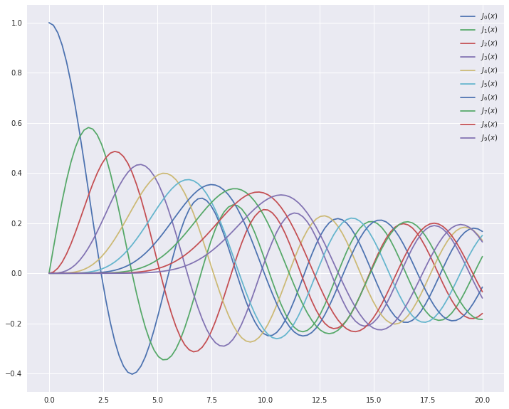
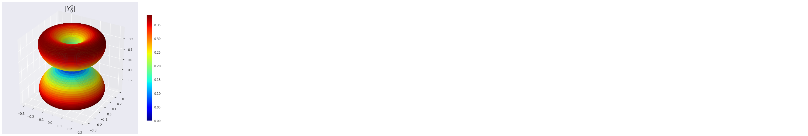
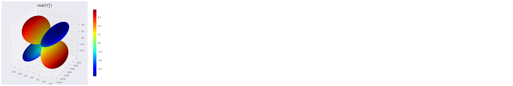
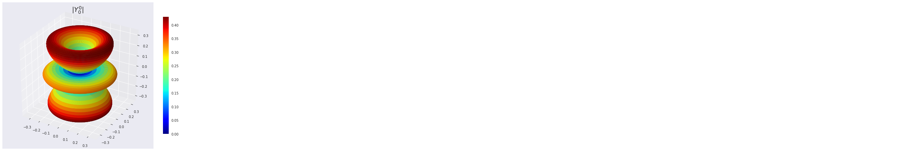
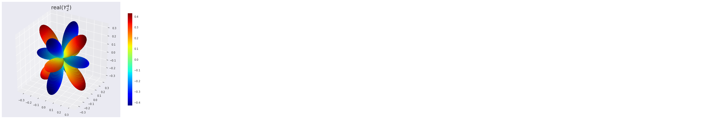
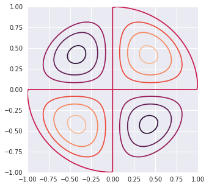
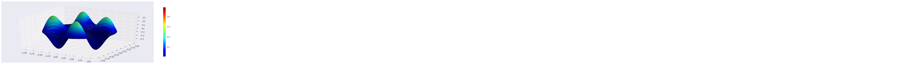
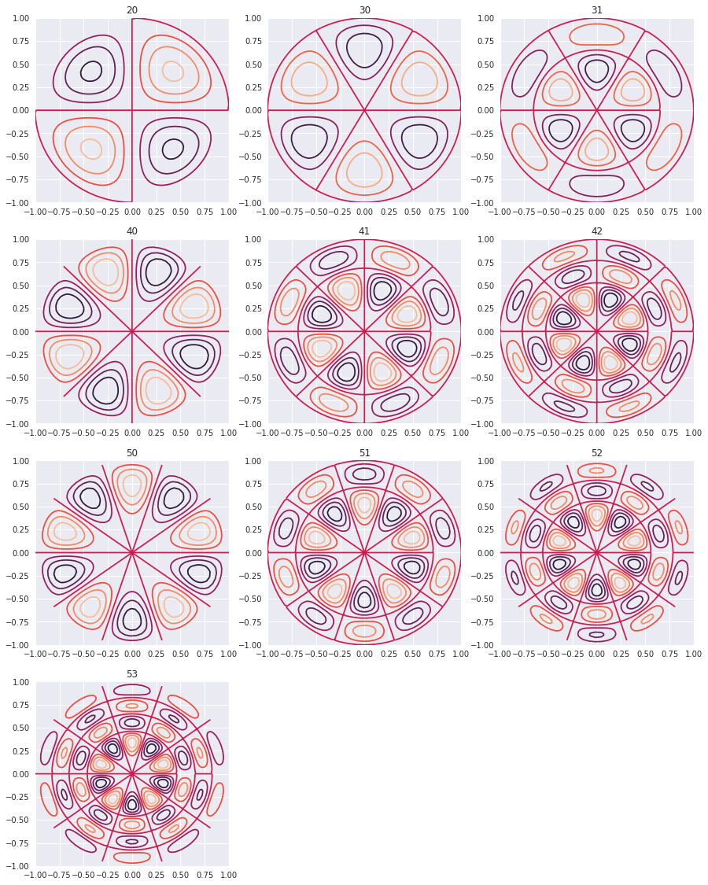
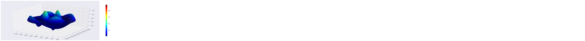

Scipy: Special Functions Source
from scipy.special import jn, yn, jn_zeros, yn_zeros import numpy as np import matplotlib.pyplot as plt %matplotlib inline from __future__ import division import scipy as sci import scipy.special as sp import numpy as np import matplotlib import matplotlib.pyplot as plt from mpl_toolkits.mplot3d import Axes3D from matplotlib import cm, colors import seaborn as sns sns.set()
Bessel Functions
n = 0 # order x = 0.0 # Bessel function of first kind print("J_%d(%f) = %f" % (n, x, jn(n, x))) x = 1.0 # Bessel function of second kind print ("Y_%d(%f) = %f" % (n, x, yn(n, x)))
J_0(0.000000) = 1.000000 Y_0(1.000000) = 0.088257
x = np.linspace(0, 20, 100) plt.figure(figsize = (12,10)) for n in range(10): plt.plot(x, jn(n, x), label=r"$J_%d(x)$" % n) plt.legend();

Spherical Harmonics
$Y^m_n(\theta,\phi) = \sqrt{\frac{2n+1}{4\pi} \frac{(n-m)!}{(n+m)!}} e^{i m \theta} P^m_n(\cos(\phi))$
Some Examples
\begin{split}Y_0^0(\theta, \phi) &= \frac{1}{2} \sqrt{\frac{1}{\pi}} \ Y_1^{-1}(\theta, \phi) &= \frac{1}{2} \sqrt{\frac{3}{2\pi}} e^{-i\theta} \sin(\phi) \ Y_1^0(\theta, \phi) &= \frac{1}{2} \sqrt{\frac{3}{\pi}} \cos(\phi) \ Y_1^1(\theta, \phi) &= -\frac{1}{2} \sqrt{\frac{3}{2\pi}} e^{i\theta} \sin(\phi).\end{split}
PHI, THETA = np.mgrid[0:2*np.pi:200j, 0:np.pi:100j] #arrays of angular variables
Y(1,0)
l = 1 #degree m = 0 #order R = np.abs(sp.sph_harm(m, l, PHI, THETA)) #Array with the absolute values of Ylm #Now we convert to cartesian coordinates # for the 3D representation X = R * np.sin(THETA) * np.cos(PHI) Y = R * np.sin(THETA) * np.sin(PHI) Z = R * np.cos(THETA) N = R/R.max() # Normalize R for the plot colors to cover the entire range of colormap. fig, ax = plt.subplots(subplot_kw=dict(projection='3d'), figsize=(10,8)) im = ax.plot_surface(X, Y, Z, rstride=1, cstride=1, facecolors=cm.jet(N)) ax.set_title(r'$|Y^1_ 0|$', fontsize=20) m = cm.ScalarMappable(cmap=cm.jet) m.set_array(R) # Assign the unnormalized data array to the mappable #so that the scale corresponds to the values of R fig.colorbar(m, shrink=0.8);

Y(2,1)
l = 2 #degree m = 1 # order PHI, THETA = np.mgrid[0:2*np.pi:200j, 0:np.pi:100j] #arrays of angular variables R = np.abs(sp.sph_harm(m, l, PHI, THETA)) #Array with the absolute values of Ylm #Now we convert to cartesian coordinates # for the 3D representation X = R * np.sin(THETA) * np.cos(PHI) Y = R * np.sin(THETA) * np.sin(PHI) Z = R * np.cos(THETA) N = R/R.max() # Normalize R for the plot colors to cover the entire range of colormap. fig, ax = plt.subplots(subplot_kw=dict(projection='3d'), figsize=(10,8)) im = ax.plot_surface(X, Y, Z, rstride=1, cstride=1, facecolors=cm.jet(N)) ax.set_title(r'$|Y^2_ 0|$', fontsize=20) m = cm.ScalarMappable(cmap=cm.jet) m.set_array(R) # Assign the unnormalized data array to the mappable #so that the scale corresponds to the values of R fig.colorbar(m, shrink=0.8);

l = 2 # degree m = 1 # order PHI, THETA = np.mgrid[0:2*np.pi:200j, 0:np.pi:100j] R = sp.sph_harm(m, l, PHI, THETA).real X = R * np.sin(THETA) * np.cos(PHI) Y = R * np.sin(THETA) * np.sin(PHI) Z = R * np.cos(THETA) #As R has negative values, we'll use an instance of Normalize #see http://stackoverflow.com/questions/25023075/normalizing-colormap-used-by-facecolors-in-matplotlib norm = colors.Normalize() fig, ax = plt.subplots(subplot_kw=dict(projection='3d'), figsize=(10,8)) m = cm.ScalarMappable(cmap=cm.jet) ax.plot_surface(X, Y, Z, rstride=1, cstride=1, facecolors=cm.jet(norm(R))) ax.set_title('real$(Y^2_ 1)$', fontsize=20) m.set_array(R) fig.colorbar(m, shrink=0.8);

Y(4,2)
l = 4 #degree m = 2 # order PHI, THETA = np.mgrid[0:2*np.pi:200j, 0:np.pi:100j] #arrays of angular variables R = np.abs(sp.sph_harm(m, l, PHI, THETA)) #Array with the absolute values of Ylm #Now we convert to cartesian coordinates # for the 3D representation X = R * np.sin(THETA) * np.cos(PHI) Y = R * np.sin(THETA) * np.sin(PHI) Z = R * np.cos(THETA) N = R/R.max() # Normalize R for the plot colors to cover the entire range of colormap. fig, ax = plt.subplots(subplot_kw=dict(projection='3d'), figsize=(10,8)) im = ax.plot_surface(X, Y, Z, rstride=1, cstride=1, facecolors=cm.jet(N)) ax.set_title(r'$|Y^0_ 0|$', fontsize=20) m = cm.ScalarMappable(cmap=cm.jet) m.set_array(R) # Assign the unnormalized data array to the mappable #so that the scale corresponds to the values of R fig.colorbar(m, shrink=0.8);

l = 4 # degree m = 2 # order PHI, THETA = np.mgrid[0:2*np.pi:200j, 0:np.pi:100j] R = sp.sph_harm(m, l, PHI, THETA).real X = R * np.sin(THETA) * np.cos(PHI) Y = R * np.sin(THETA) * np.sin(PHI) Z = R * np.cos(THETA) #As R has negative values, we'll use an instance of Normalize #see http://stackoverflow.com/questions/25023075/normalizing-colormap-used-by-facecolors-in-matplotlib norm = colors.Normalize() fig, ax = plt.subplots(subplot_kw=dict(projection='3d'), figsize=(10,8)) m = cm.ScalarMappable(cmap=cm.jet) ax.plot_surface(X, Y, Z, rstride=1, cstride=1, facecolors=cm.jet(norm(R))) ax.set_title('real$(Y^4_ 2)$', fontsize=20) m.set_array(R) fig.colorbar(m, shrink=0.8);

Vibrating Circular Membrane
The vibrations of a thin circular membrane stretched across a rigid circular frame (such as a drum head) can be described as normal modes written in terms of Bessel functions:
$\large{z(r,θ;t)=AJ_n(kr)\sin(nθ)\cos(kνt)}$
where $(r,θ)$ describes a position in polar co-ordinates with the origin at the centre of the membrane, t is time and v is a constant depending on the tension and surface density of the drum. The modes are labelled by integers $n=0,1,⋯ $ and $m=1,2,3,⋯$ where k is the mth zero of $J_n$.
The following program produces a plot of the displacement of the membrane in the n=3,m=2 normal mode at time t=0.
| Table | p | q |
|---|---|---|
 |
 |
 |
| --- | --- | --- |
 |
 |
 |
| --- | --- | --- |
|
 |
 |
import numpy as np from scipy.special import jn, jn_zeros import pylab import seaborn as sns sns.set()
def displacement(n, m, r, theta): """ Calculate the displacement of the drum membrane at (r, theta; t=0) in the normal mode described by integers n >= 0, 0 < m <= mmax. """ # Pick off the mth zero of Bessel function Jn k = jn_zeros(n, mmax+1)[m] return np.sin(n*theta) * jn(n, r*k)
SIngle Plot
# Allow calculations up to m = mmax mmax =10 # Positions on the drum surface are specified in polar co-ordinates r = np.linspace(0, 1, 100) theta = np.linspace(0, 2 * np.pi, 100) # Create arrays of cartesian co-ordinates (x, y) ... x = np.array([rr*np.cos(theta) for rr in r]) y = np.array([rr*np.sin(theta) for rr in r]) # ... and vertical displacement (z) for the required normal mode at # time, t = 0
n0, m0 = 2,0 z = np.array([displacement(n0, m0, rr, theta) for rr in r]) plt.figure(figsize = [5,5]) pylab.contour(x, y, z) pylab.show()

3D plot
r, theta = np.mgrid[0:1:100j, 0:2*np.pi:100j] x = r*np.cos(theta) y = r*np.sin(theta) z = displacement(n0, m0, r, theta) N = z/(z.max() -z.min()) fig, ax = plt.subplots(subplot_kw=dict(projection='3d'), figsize=(18,6)) im = ax.plot_surface(x, y, z, rstride=1, cstride=1, facecolors=cm.jet(N)) mm = cm.ScalarMappable(cmap=cm.jet) mm.set_array(R) fig.colorbar(mm, shrink=0.8);

Multiplot
plt.figure(figsize = [15,25]) k = 0 for n in range(6): for m in range(n-1): k = k+1 z = np.array([displacement(n, m, rr, theta) for rr in r]) plt.subplot(5,3,k) plt.title(str(n) + str(m)) pylab.contour(x, y, z) pylab.show()

m,n = 2,2
n0,m0 = 2,2 r, theta = np.mgrid[0:1:100j, 0:2*np.pi:100j] x = r*np.cos(theta) y = r*np.sin(theta) z = displacement(n0, m0, r, theta) N = z/(z.max() -z.min()) fig, ax = plt.subplots(subplot_kw=dict(projection='3d'), figsize=(18,6)) im = ax.plot_surface(x, y, z, rstride=1, cstride=1, facecolors=cm.jet(N)) mm = cm.ScalarMappable(cmap=cm.jet) mm.set_array(R) fig.colorbar(mm, shrink=0.8);

References
- https://en.wikipedia.org/wiki/Vibrations_of_a_circular_membrane
- https://www.exoruskoh.me/single-post/2017/05/24/Vibrating-Membranes-and-Fancy-Animations
- https://www.acs.psu.edu/drussell/Demos/MembraneCircle/Circle.html
- http://balbuceosastropy.blogspot.com/2015/06/spherical-harmonics-in-python.html